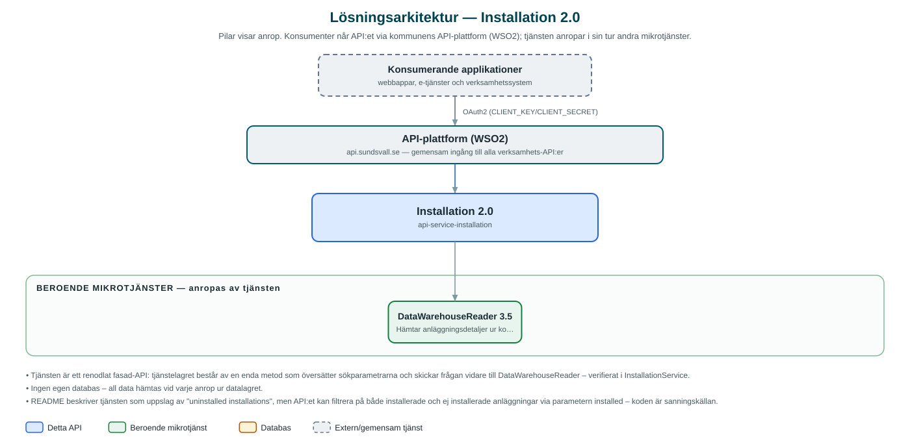

Installation
Uppslag av anläggningar (installationer) hos kommunens leverantörsbolag – till exempel el- och fjärrvärmeanläggningar – ur kommunens datalager.
Om API:et
Installation ger kommunens applikationer ett enkelt sätt att hämta detaljerad information om anläggningar hos leverantörsbolagen inom kommunkoncernen, till exempel elanläggningar. Uppgifterna hämtas ur kommunens datalager via tjänsten DataWarehouseReader och omfattar bland annat anläggnings-id, adressuppgifter och metadata per anläggning.
API:et består av en sökresurs där resultatet kan filtreras på kategori (till exempel ELECTRICITY), anläggnings-id, om anläggningen är installerad eller inte samt ändringsdatum, med paginerat svar. Tjänsten lagrar ingenting själv utan är ett tunt, läsande fasad-API framför datalagret.
Det här gör API:et
- Sök anläggningar – Hämtar detaljinformation om anläggningar ur datalagret med paginerat svar.
- Filtrering på kategori – Resultatet kan avgränsas till en viss typ av anläggning, till exempel el.
- Filtrering på anläggnings-id och status – Sökningen kan avgränsas till en specifik anläggning och till installerade eller ej installerade anläggningar.
- Ändringsdatum – Med dateFrom hämtas bara anläggningar som ändrats efter ett visst datum.
API-dokumentation
API:ets samtliga resurser, parametrar och datamodeller finns beskrivna i en OpenAPI-specifikation som är hämtad ur källkodsförrådet. Den kan utforskas interaktivt i Swagger UI eller laddas ner som YAML. Programvaruförteckningen (SBOM) listar tjänstens samtliga tredjepartskomponenter med version och licens.
Teknisk dokumentation
Nedan beskrivs hur tjänsten är uppbyggd, vilka andra tjänster den anropar och vad som krävs för att driftsätta den. Informationen är härledd ur källkoden och dess konfiguration på GitHub.
Arkitektur

API:et är en mikrotjänst (Java 25, Spring Boot via kommunens gemensamma tjänsteplattform dept44 (8.0.8), byggd med Maven). Konsumenter når tjänsten via kommunens gemensamma API-plattform (WSO2) på api.sundsvall.se – tjänsten anropas aldrig direkt. Tjänsten anropar i sin tur andra mikrotjänster i kommunens tjänstelandskap.
Teknikstack
- Språk: Java 25
- Ramverk: Spring Boot via kommunens gemensamma tjänsteplattform dept44 (8.0.8), byggd med Maven
- Övrigt: Resilience4j-circuit breaker mot DataWarehouseReader
Beroenden till andra mikrotjänster
Tjänsten anropar följande mikrotjänster. Versionerna är hämtade ur källkodens integrationsklienter.
| Tjänst | Version | Användning |
|---|---|---|
| DataWarehouseReader | 3.5 | Hämtar anläggningsdetaljer ur kommunens datalager; alla sökparametrar skickas vidare dit. |
Programvaruförteckning
Tjänsten bygger på 223 tredjepartskomponenter fördelade på 12 olika licenser. Till skillnad från tabellen ovan, som listar andra mikrotjänster, avses här de programbibliotek som ingår i bygget. Se programvaruförteckningen för hela listan.
Konfiguration och driftsättning
- application.yml med URL, token-URL och OAuth2-klientuppgifter för DataWarehouseReader
- Timeout-inställningar för anropen mot DataWarehouseReader
- municipalityId loggas i MDC för spårbarhet
- Anrop görs per kommun – municipalityId ingår i alla API-vägar
Noterbart ur källkoden
- Tjänsten är ett renodlat fasad-API: tjänstelagret består av en enda metod som översätter sökparametrarna och skickar frågan vidare till DataWarehouseReader – verifierat i InstallationService.
- Ingen egen databas – all data hämtas vid varje anrop ur datalagret.
- README beskriver tjänsten som uppslag av "uninstalled installations", men API:et kan filtrera på både installerade och ej installerade anläggningar via parametern installed – koden är sanningskällan.
Källkod
Källkoden är öppen och finns hos Sundsvalls kommun på GitHub. I källkodsförrådet finns även instruktioner för att klona, konfigurera och starta tjänsten i egen miljö.